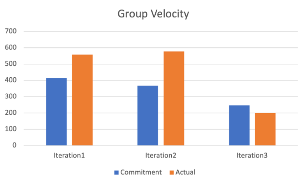

Project Velocity
As described in the i3 worksheet, generally we underestimate the amount of time it would take to finish the tasks we listed. The reason for this is most of us weren’t familiar with Android Studio so Iteration1 took a lot more time than expected. In iteration 2 we have learned many tools that allow us to work collaboratively more efficiently like git and TDD approach. However, the learning curve to implement HSQLDB is high thus it creates another gap between actual time spent. Additionally, iteration 2 required us to have some features implemented in UI which radically shift our focus on logic to UI. Many members didn’t have prior knowledge in Android’s UI structure so it’s our second learning curve. Finally after all the learning has been set, our actual time spent this time gets reduced. Also the commitment is less because the focus on i3 is not about new features but refine our codes and make sure we can deliver a working product with a minimal amount of bugs.